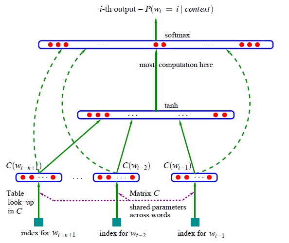

In the previous lecture, we built a simple bigram character-level language model, using 2 different approaches that are (1) count, and (2) 1 layer neural network. They produced the same (and both poor - since the context is 1 character only) result but the neural network option offers more flexibility so that we can complexify our model to get better performance.
In this lecture we are going to implement 20-years ago neural probabilistic language model by Bengio et al. (2003).
PART 1: intro to MLP
Bengio et al. 2003 (MLP language model) paper walkthrough
Summary
Problem Statement:
- Traditional n-gram language models suffer from the curse of dimensionality: they can’t effectively generalize to word sequences not seen in training data;
- The core issue is treating words as atomic units with no inherent similarity to each other;
- For example, if we’ve seen “dog is eating” in training but never “cat is eating”, n-gram models can’t leverage the similarity between “dog” and “cat”;
- This leads to poor probability estimates for rare or unseen word sequences.
Solution:
- Learn a distributed representation (embedding) for each word in a continuous vector space where similar words are close to each other;
- Use a neural network architecture with:
- Input layer: concatenated embeddings of n-1 previous words;
- Hidden layer: dense neural network with
tanhactivation; - Output layer: softmax over entire vocabulary to predict next word probability.
The model simultaneously learns:
- Word feature vectors (embeddings) that capture semantic/syntactic word similarities;
- Neural network parameters that combine these features to estimate probability distributions.
Key advantages:
- Words with similar meanings get similar feature vectors, enabling better generalization;
- The probability function is smooth with respect to word embeddings, so similar words yield similar predictions;
- Can generalize to unseen sequences by leveraging learned word similarities.
Methodology:
Traditional Problem:
- In n-gram models, each word sequence of length n is a separate parameter;
- For vocabulary size \(|V|\), need \(|V|^n\) parameters;
- Most sequences never appear in training, leading to poor generalization;
Solution via Distributed Representation:
- Each word mapped to a dense vector in \(R^m\) (typically m=50-100);
- Similar words get similar vectors through training;
- Probability function is smooth w.r.t these vectors;
- Key benefit: If “dog” and “cat” have similar vectors, model can generalize from “dog is eating” to “cat is eating”;
- Number of parameters reduces to \(O(|V|×m + m×h + h×|V|)\), where \(h\) is hidden layer size;
- This is much smaller than \(|V|^n\) and allows better generalization;
Neural architecture:
Input Layer:
- Takes \(n-1\) previous words (context window);
- Each word i mapped to vector \(C(i) ∈ R^m\) via lookup table;
- Concatenates these vectors: \(x = [C(wₜ₋ₙ₊₁), ..., C(wₜ₋₁)]\);
- \(x\) dimension is \((n-1)×m\);
Hidden Layer:
- Dense layer with tanh activation;
- Computation: \(h = tanh(d + Hx)\);
- \(H\) is weight matrix, \(d\) is bias vector;
- Maps concatenated context to hidden representation;
Output Layer:
- Computes probability distribution over all words;
- \(y = b + Wx + Uh\);
- Softmax activation: \(P(wₜ|context) = exp(yᵢ)/Σⱼexp(yⱼ)\);
- \(W\) provides “shortcut” connections from input to output;
- Direct connection helps learn simpler patterns;
Training:
- Maximizes log-likelihood of training data;
- Uses stochastic gradient descent;
- Learns both word vectors \(C(i)\) and neural network parameters \((H, d, W, U, b)\);
- Word vectors capture similarities as they help predict similar contexts;
- Can initialize word vectors randomly or with pretrained vectors.

(re-)building our training dataset
Loading library, reading data, building dictionary:
Show the code
['emma', 'olivia', 'ava', 'isabella', 'sophia', 'charlotte', 'mia', 'amelia']Show the code
{1: 'a',
2: 'b',
3: 'c',
4: 'd',
5: 'e',
6: 'f',
7: 'g',
8: 'h',
9: 'i',
10: 'j',
11: 'k',
12: 'l',
13: 'm',
14: 'n',
15: 'o',
16: 'p',
17: 'q',
18: 'r',
19: 's',
20: 't',
21: 'u',
22: 'v',
23: 'w',
24: 'x',
25: 'y',
26: 'z',
0: '.'}Building the dataset:
Show the code
block_size = 3 # the context length: how many characters do we take to predict the next one?
X, Y = [], []
for w in words[:5]:
print(w)
context = [0] * block_size # 0 so context will be padded by '.'
for ch in w + '.':
ix = stoi[ch]
X.append(context)
Y.append(ix)
print(''.join(itos[i] for i in context), '----->', itos[ix] )
context = context[1:] + [ix] # rolling to the next one
X = torch.tensor(X)
Y = torch.tensor(Y)emma
... -----> e
..e -----> m
.em -----> m
emm -----> a
mma -----> .
olivia
... -----> o
..o -----> l
.ol -----> i
oli -----> v
liv -----> i
ivi -----> a
via -----> .
ava
... -----> a
..a -----> v
.av -----> a
ava -----> .
isabella
... -----> i
..i -----> s
.is -----> a
isa -----> b
sab -----> e
abe -----> l
bel -----> l
ell -----> a
lla -----> .
sophia
... -----> s
..s -----> o
.so -----> p
sop -----> h
oph -----> i
phi -----> a
hia -----> .implementing the embedding lookup table
In the paper they cram 17k word into as-low-as-possible 30 dimensions space, for our data, we just cram words into 2D space.
We can access the element of torch.tensor by:
Show the code
tensor([-0.3284, 0.1093])…but in this lecture accessing by C[5] would be sufficient. We can even access using a more than 1 dimension tensor:
Show the code
torch.Size([32, 3, 2])
tensor(1)
tensor([-0.0513, -0.0358])
tensor([-0.0513, -0.0358])PyTorch is great for embedding words:
We’ve compeleted the first layer with context and lookup table!
implementing the output layer
In Deep Learning, people use logits for what raw output that range from negative inf to positive inf.
Now we need to exponentiate it and get the probability.
Every row of probs has sum of 1.
And this is the probs of each ground true Y in current output of the neural nets:
tensor([4.0100e-01, 7.6919e-13, 2.8720e-17, 2.5311e-13, 5.2105e-15, 3.8929e-22,
5.9739e-21, 1.2991e-12, 1.8388e-09, 1.1690e-01, 1.2747e-14, 9.2677e-15,
3.9299e-18, 3.2560e-01, 6.4046e-16, 9.9983e-01, 4.8943e-01, 1.4460e-16,
1.0446e-15, 1.8470e-19, 7.3648e-12, 2.2317e-10, 4.7360e-09, 8.1282e-25,
9.6208e-12, 1.0319e-21, 2.7964e-07, 3.5155e-01, 3.8356e-29, 8.4523e-16,
6.1166e-10, 4.6813e-04])Result is not good as we’ve not trained the network yet!
implementing the negative log likelihood loss
We define the negative log likelihood as:
summary of the full network
Dataset:
Neural network layers:
Size of the network:
Constructing forward pass:
PART 2: intro to many basics of machine learning
introducing F.cross_entropy and why
We re-define loss:
Why?
- Pytorch will create more intermediate tensor for every assignment:
counts,probs-> more memory; - Backward pass will be more optimized, because the expressions are much analytically and mathematically interpreted;
- Cross entropy can be significantly & numerically well behaved (for eg when we exponentiate a large positive number we got inf, PyTorch cross entropy will calculate the max of set and subtract it - which will not impact the exp result)
implementing the training loop, overfitting one batch
So the forward pass, backward pass, and update loop will be implemented as below:
Show the code
for _ in range(100):
# forward pass:
emb = C[X] # (32, 3, 2)
h = torch.tanh(emb.view(-1, 6) @ W1 + b1) # (32, 100)
logits = h @ W2 + b2 # (32, 27)
loss = F.cross_entropy(logits, Y)
print(loss.item())
# backward pass:
for p in parameters:
p.grad = None
loss.backward()
# update
for p in parameters:
p.data += -0.1 * p.grad
print(loss.item())17.76971435546875
13.656400680541992
11.298768997192383
9.452457427978516
7.984262466430664
6.891321182250977
6.100014686584473
5.452036380767822
4.898152828216553
4.4146647453308105
3.985848903656006
3.6028313636779785
3.262141466140747
2.961380958557129
2.6982972621917725
2.469712495803833
2.271660566329956
2.1012837886810303
1.9571772813796997
1.8374857902526855
1.7380963563919067
1.6535115242004395
1.579089879989624
1.5117661952972412
1.4496047496795654
1.3913118839263916
1.335992455482483
1.283052921295166
1.2321910858154297
1.18338143825531
1.1367989778518677
1.092664361000061
1.051092505455017
1.0120267868041992
0.9752704501152039
0.9405565857887268
0.9076124429702759
0.8761918544769287
0.8460890054702759
0.8171356916427612
0.7891990542411804
0.7621747255325317
0.735981285572052
0.7105579376220703
0.6858609914779663
0.6618649959564209
0.6385657787322998
0.6159818768501282
0.594165563583374
0.5732105374336243
0.553256094455719
0.5344882011413574
0.5171166658401489
0.5013314485549927
0.4872424602508545
0.47484052181243896
0.46399760246276855
0.45451420545578003
0.446170836687088
0.43876633048057556
0.4321330785751343
0.42613884806632996
0.42067962884902954
0.4156753420829773
0.4110613763332367
0.4067871570587158
0.40281057357788086
0.3990972638130188
0.395617812871933
0.3923477530479431
0.3892652690410614
0.38635194301605225
0.3835916221141815
0.3809700012207031
0.37847405672073364
0.37609291076660156
0.3738163411617279
0.3716348707675934
0.36954087018966675
0.36752671003341675
0.3655855655670166
0.36371129751205444
0.36189836263656616
0.3601415753364563
0.3584362268447876
0.35677796602249146
0.3551628589630127
0.35358697175979614
0.35204699635505676
0.35053980350494385
0.34906232357025146
0.3476122319698334
0.3461865782737732
0.3447835445404053
0.34340089559555054
0.34203681349754333
0.3406899571418762
0.3393586277961731
0.33804190158843994
0.33673879504203796
0.33673879504203796We are fitting 32 examples to a neural nets of 3481 params, so it’s super easy to be overfitting. We got a low final loss, but it would never be 0, because the output can varry for the same input, for eg, ....
torch.return_types.max(
values=tensor([11.3379, 13.0894, 18.9434, 17.5786, 12.7205, 11.3379, 13.0234, 11.5993,
13.5442, 15.5540, 12.5548, 17.6663, 11.3379, 12.6919, 13.9530, 17.0410,
11.3379, 13.8052, 11.4075, 13.1371, 15.8441, 12.1391, 7.9167, 7.8798,
13.8772, 11.3379, 13.0983, 13.6820, 11.2885, 14.2338, 15.6165, 12.0455],
grad_fn=<MaxBackward0>),
indices=tensor([ 1, 13, 13, 1, 0, 1, 12, 9, 22, 9, 1, 0, 1, 22, 1, 0, 1, 19,
1, 2, 5, 12, 12, 1, 0, 1, 15, 16, 8, 9, 1, 0]))